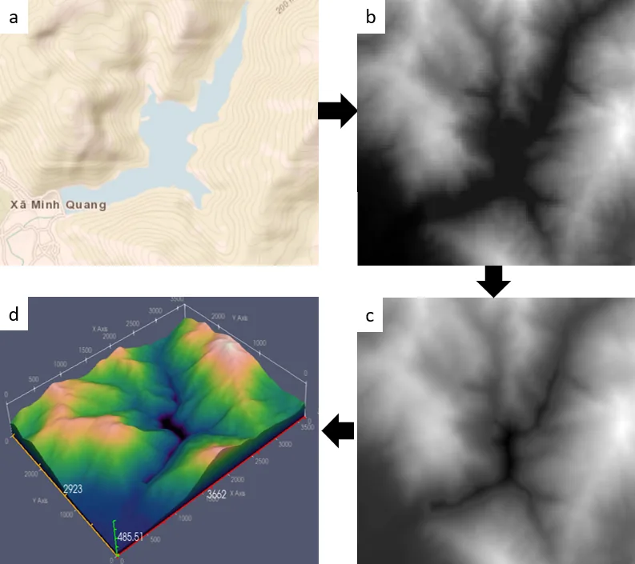

OpenSource CFD brings together all the research and simulation services of Dr. Van Quan Hoang — open to the community, ready for industry.
CFD engineer · PhD in Mechanics & Energy · Lecturer, Thai Nguyen University of ICT
I do CFD for problems that commercial codes get wrong: thin oil films on hot windings, drops spreading with dynamic contact angles, sprays turning into wall films, pulsating flow in corrugated channels. When the model does not exist, I write it — and publish it so others can check it.
Every model is checked against experiments, exact solutions or published data before it informs a decision.
Reports always state uncertainty and assumptions. If CFD is the wrong tool, you hear it on day one.
You receive every case file. Public research is shared so the community can learn from it.

Send a short description. Free feasibility review within 24 hours, no obligation.